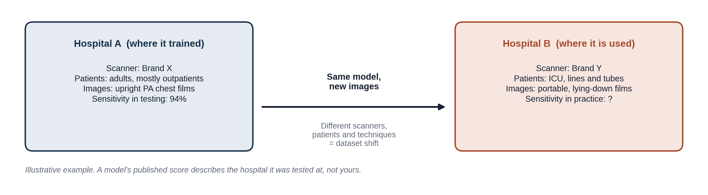
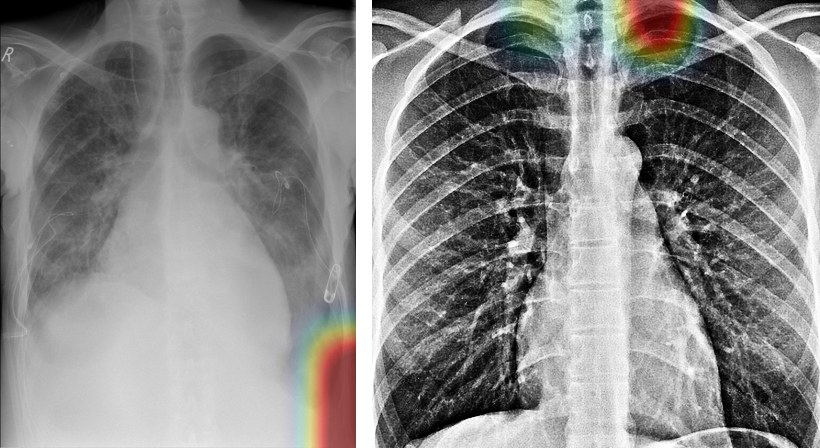

Dataset shift, invisible changes, bias, shortcut learning, hidden stratification, and confident mistakes
PTX-Detect scored 94% sensitivity in testing. This lesson is about why that number may not hold when the tool reaches your hospital, the surprising things models sometimes learn instead of the disease, and the habits that keep you safe when you work alongside AI. Each failure here has happened with real, published models.
By the end of this lesson you can:
A model learns from the images it was given. If the images at a new hospital look different, the model is working outside what it learned. This is called dataset shift. Images can differ because of the scanner brand and settings, the patients (age, illness, body size), how films are taken (upright in the department or lying flat in the ICU), and even the software that processes the image.

Remember from Lesson 1.3 that a model is only checked properly on data it never trained on. A test set from a different hospital (an "external" test) is a much tougher and more honest check than one from the same hospital.
To a computer, a photo is a grid of numbers: each pixel has a brightness from 0 (black) to 255 (white) for each color (Lesson 1.2). A person looks at shapes. A model looks at those numbers, and it can react strongly to patterns in them that no person would notice.
The demo below uses a real image model called ResNet-50, trained on 1.2 million everyday photos. Every number on it was produced by running the model on exactly the pictures you see. A targeted change means a change worked out from the model itself: you ask the model which tiny nudge to each pixel would push its answer toward a chosen wrong answer (here, "gibbon"), then apply that nudge. This is called an adversarial example.
Move the slider to set how much any single pixel may change. The third panel shows the change itself, made 16 times stronger so you can see it.
The same trick works on medical images. Researchers made changes invisible to people that flipped chest X-ray, eye and skin models from "normal" to "disease" and back (Finlayson et al., Science 2019). Deliberate attacks like this are rare in hospitals. The point is what it shows: a model does not see an image the way you do, so a small, ordinary difference, such as a new scanner setting or image processing step, can matter far more to it than you would expect.
When a department changes X-ray equipment, the patients stay the same but the images do not. The biggest difference is usually image processing: every manufacturer's software turns the raw signal from the detector into the film you see, and each uses its own contrast curve, edge sharpening and noise reduction. Exposure settings (the voltage and dose the technologist chooses) change contrast and how grainy the film looks. Resolution differs too: the size of the detector's pixels, and how the image is shrunk to the small size the model takes in. Finally, positioning matters: an upright film taken from behind (PA) and a portable film taken from the front with the patient lying down (AP) differ in heart size, where air and fluid collect and what is in the frame.
This demo uses a real chest X-ray model (DenseNet-121 from the open-source TorchXRayVision project, trained on hundreds of thousands of chest X-rays) on a normal chest X-ray. The slider applies one change: the edge sharpening and contrast curve, the part of image processing that differs most between manufacturers. Every score was produced by running the model on exactly the film you see. The strongest settings go a little beyond what a manufacturer would ship, to make the effect easy to see.
Callback: go back to the model you trained in Teachable Machine in Lesson 1.3. Change the lighting, move to another room, or hold the pen at an odd angle. How quickly does it fail? That is dataset shift on your own desk.
A model learns only from the patients in its training data. If a group of patients is rare or missing, the model learns mostly from everyone else and tends to work worse for that group. In AI, this unequal performance is called bias. It does not need anyone to intend it; it comes from who was, and was not, in the data.
This is a real problem in radiology. Researchers trained chest X-ray models on sets with different mixes of male and female patients. When one sex made up too little of the training data, the models did worse on films from that sex (Larrazabal et al., PNAS 2020). In a separate study, chest X-ray models trained on large public datasets more often called a film "normal" when disease was present in female, Black, Hispanic and younger patients and in patients on Medicaid (Seyyed-Kalantari et al., Nature Medicine 2021).
A simple nodule detector looks at one thing on each chest X-ray: how much a spot stands out from the lung around it. On many women's films, breast tissue lies over the lower lungs and makes every spot, nodule or harmless shadow, stand out less. The model trains on 200 films (live, in your browser) and ends up with a single cutoff: spots that stand out more than that are flagged as a nodule. Change how many training films come from female patients, and watch where the cutoff lands for a test group of 20 nodules and 20 harmless shadows (such as a blood vessel seen end-on) in each group. (Simulated films and a simplified mechanism made up for teaching; the pattern matches the studies above.)
Training rewards the model for getting the label right, and nothing else. If some feature of the image happens to go along with the label, the model will happily use it, even if it has nothing to do with the disease. This is called shortcut learning. Two real examples:
Shortcuts are hard to catch because the test score looks fine whenever the test set shares the same shortcut as the training set.
This is a real chest X-ray from an intensive care unit (ICU). It was taken with the patient lying flat, and it shows a pneumothorax (air between the lung and the chest wall) on the patient's left, which is the right side of the image. Imagine a pneumothorax model flagged it. Click each numbered region to find out whether it is the real finding or something the model might have used as a shortcut.
Click a numbered region on the image. One is the actual finding; the others are clues that say more about the patient's care than about the lung.
The "R" marks the patient's right side. Its style, size and position differ between hospitals, machines and technologists, and films taken at the bedside often carry extra text such as "PORTABLE" or "SUPINE". The pneumonia model in the Zech study learned to recognize the hospital from clues like these, and the COVID-19 models in the DeGrave study leaned on text and regions outside the lungs.
This patient already has chest drains on both sides. A chest drain is the treatment for a pneumothorax, so if many positive training films have one, the model can learn "tube means pneumothorax." It then does well on patients who are already treated and poorly on the ones who still need help. See "Hidden stratification" below.
Safety pins, wires and tubing outside the body are common on ICU patients. Sicker patients get more of them and also have more pneumothoraces, so "lots of equipment" can become a clue for "positive" without the model ever looking at the lung.
When a patient lies flat, free air in the chest rises to the front and lower part of the chest instead of the top. On the image this makes the outer lower corner of the chest look unusually deep and dark: the deep sulcus sign. This is what a radiologist looks for on a lying-flat film, and what we hope the model learned.

Each story below describes a real kind of failure. Use the definitions to pick the problem behind each one.
A tool trained on 300 images is nearly perfect on those images but poor on new ones.
A chest X-ray model trained almost entirely on films from men misses more findings on films from women.
A model built on images from Scanner X loses 15 points of sensitivity on images from Scanner Y.
A fracture model learned to spot the logo printed on films from the trauma center, where fractures are common.
A third of the "normal" training labels came from reports that had missed the finding.
Researchers changed each pixel of a chest X-ray by one brightness level. The film looked the same, but the model switched from "normal" to "pneumothorax".
You don't need to be a computer scientist to use AI safely. Three habits go a long way:
Answer each question to continue. Any answer is fine; read the explanation.
A fracture-detection model scores very well at the hospital where it was built. At a second hospital with a different X-ray vendor, it misses many more fractures. What is the most likely explanation?
Different machines produce images that look different to the model. Its performance was measured on images like its training data; the new images are outside that. Models don't forget once trained.
A heatmap shows a model focused on the correct area of the lung. What can you conclude?
A heatmap is a rough picture of which pixels influenced the answer. A well-placed map is reassuring but not proof. A map on a tube or text marker, however, is a red flag worth noticing.
On a rotation, the AI says a chest X-ray is normal, but you think you see a small pneumothorax. What should you do?
Disagreement is exactly when a second look matters. The AI can miss findings, especially subtle ones or in patients unlike its training data. Raise it, learn from the answer, and report the AI's error if it was wrong.
You now know what AI is, how it learns, what it learns from, how it is measured and how it fails. Module 2 covers radiology itself: how images are made, what they are to a computer, how a scan moves through the hospital and how to read the report, and Module 3 covers judging the evidence and using AI without losing your own skills.
Panda photo: "Giant panda eating bamboo" by Kevin Dooley, Wikimedia Commons, CC BY 2.0; cropped, resized and changed by the ResNet-50 attack described above. Chest X-ray: "Deep sulcus sign" by Hellerhoff, Wikimedia Commons, CC BY-SA 3.0; resized, and with a heatmap added in Figure 2. Normal chest X-ray: "Normal posteroanterior (PA) chest radiograph (X-ray)", Wikimedia Commons, CC0; cropped, resized and processed for the scanner demo and Figure 2.